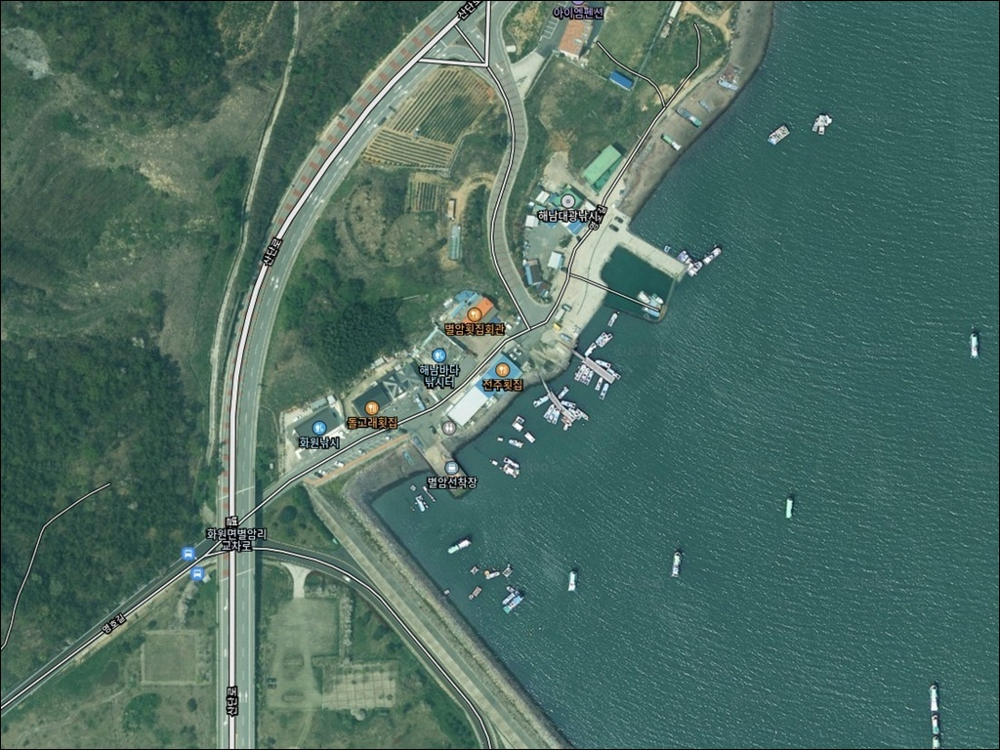
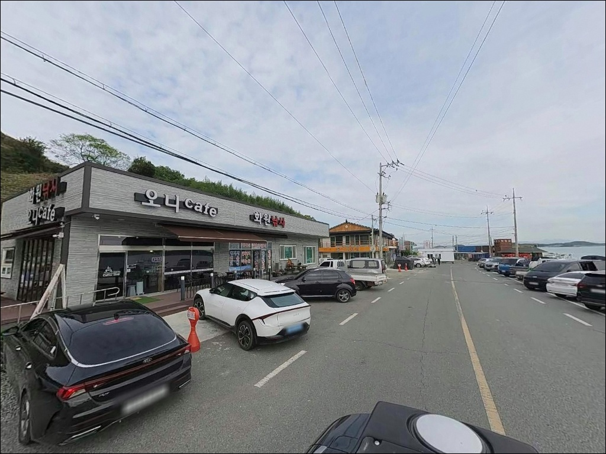
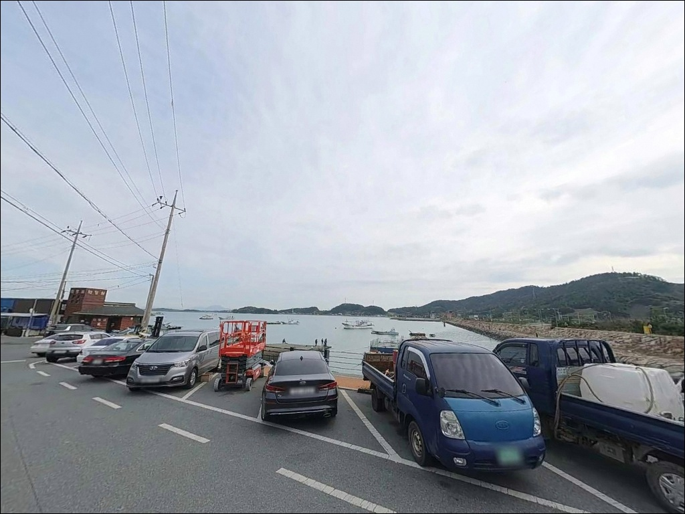
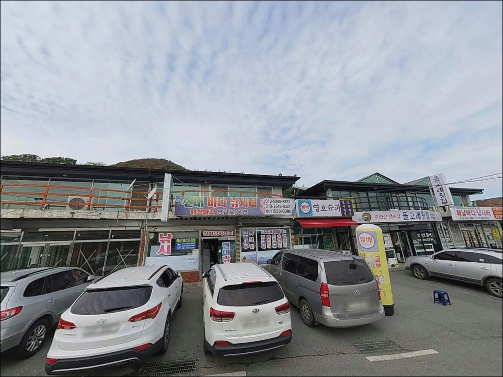
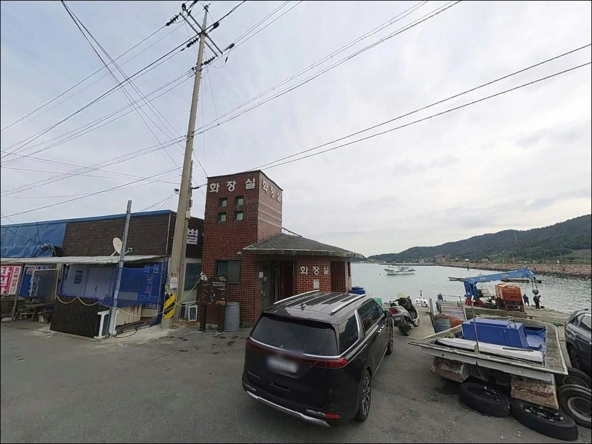
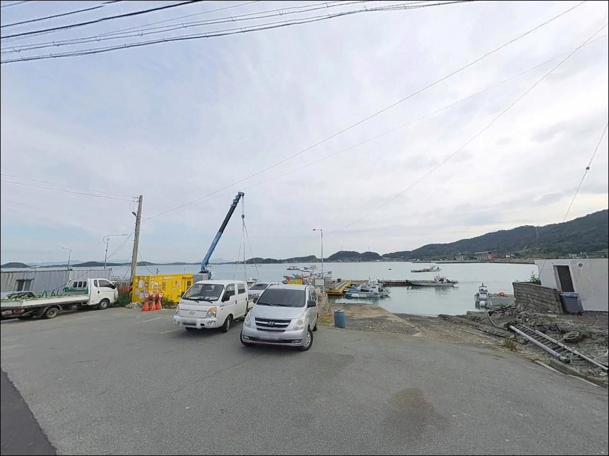
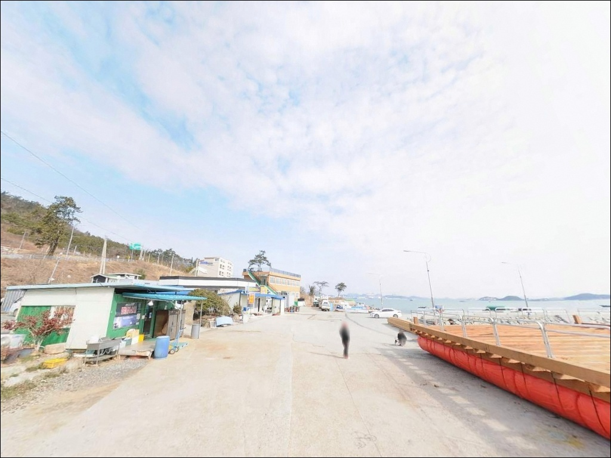
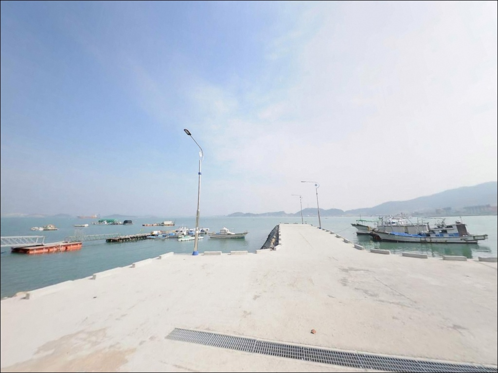
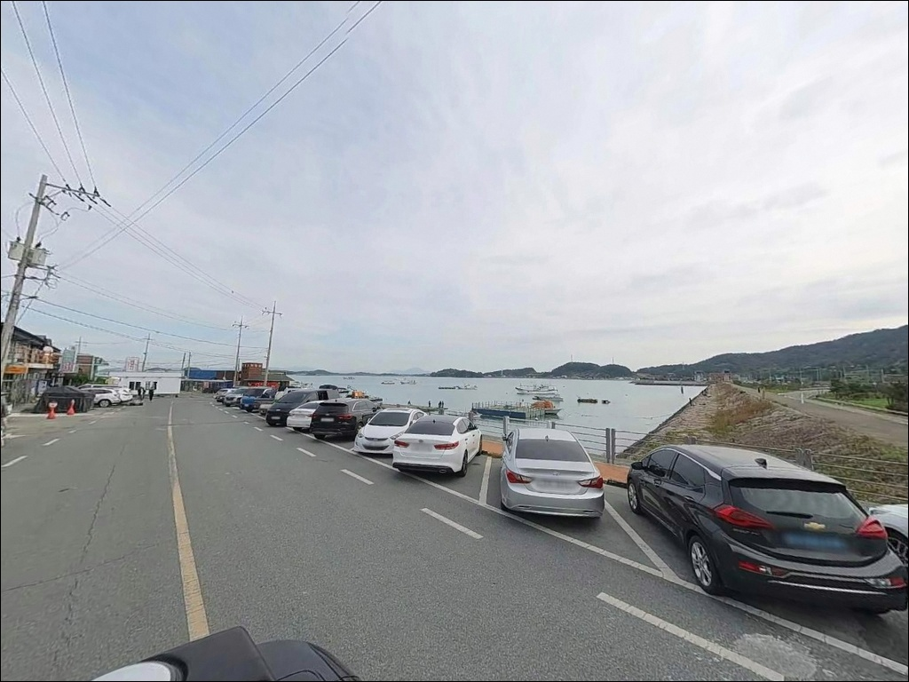

별암선착장, 전남 해남군 자연 그대로의 분위기에서 차박, 낚시를 즐기기 좋은 포인트


포인트 안내
별암선착장
전남 해남군 화원면 영호리 970
풀치 야간낚시 계획을 잡기 전에
먼저 확인해야 할 것은 채비가 아니라 물때입니다.
금호방조제 끝자락과 맞닿은 이 선착장은
간조 전후 수심이 낮아지는 구간이 있어,
타이밍 없이 진입하면 낚시 자리 자체가 사라지는
상황이 만들어집니다.
방조제 본류 조류 흐름이 살아나는 시간대를
먼저 계산하는 것이 이 포인트 공략의 출발점입니다.
전남 해남군 화원면 영호리,
금호방조제 진입부 끝자락에 자리한 별암선착장은
방파제와 포구형 선착장이 결합된 구조입니다.
갑오징어 에깅과 풀치 루어낚시를
중심으로 지역 낚시인들 사이에서
꾸준히 알려진 포인트이며,
차량 접근이 수월해 당일 출조에도
부담이 없는 편입니다.
이 글은 별암선착장의
진입 동선, 차박 체류 여건, 지형 기반 낚시 여건,
낚시 스타일 적합성에 집중합니다.
조황 단정이나 특정 어종 보장은
이 글의 범위에 포함되지 않습니다.

1. 포인트 위치 및 진입 동선 분석
별암선착장은 금호방조제 도로와 직접 연결된 구조로,
해남읍에서 화원면 방향 도로를 따라
진입하는 방식이 일반적입니다.
방조제 도로 자체는 포장 상태이며
경사가 심한 구간은 없어
일반 승용차 기준 진입에 큰 어려움은 없는 편입니다.
선착장 최종 진입 구간에서
어촌 마을 소로가 포함될 수 있어,
대형 SUV나 캠핑 장비를 갖춘 차량이라면
출발 전 위성지도로 마지막 진입로를
미리 확인하는 편이 좋습니다.
회차 공간은 선착장 주변에 있으나
여유가 넉넉하지 않을 수 있어
후진 진출이 어려운 대형 차량은 주의가 필요합니다.
주차는 선착장 인근 도로변 공터를
활용하는 방식이 일반적입니다.
규모가 크지 않은 선착장인 만큼
풀치 성수기에는 주차 공간이
빠르게 채워지는 편이라,
조기 도착이 자리 선택에 유리합니다.

2. 차박 환경 평가 및 야간 체류 여건
별암선착장은 차박을 메인으로 삼기보다
낚시 후 짧게 머무는 용도로 보는 것이
현실에 맞는 접근입니다.
선착장 주변 공터나 도로변 공간이
차량 대기 장소로 활용되는 편이지만,
공간이 협소해 대형 캠핑카 운용은 어려울 수 있습니다.
야간에는 민가 밀집도가 낮고 차량 통행이 줄어
비교적 조용한 환경이 만들어집니다.
다만 가로등 설치 여부가 명확하지 않아
개인 조명 장비는 반드시 챙겨야 합니다.
방조제 외항 방향은 바람 영향을 받는 구간이
생길 수 있어, 야간 체류 전
바람 방향과 기상 예보를 먼저 확인하는 편이 좋습니다.
차박이란 차량을 숙박 공간으로 활용하며
현장에서 하룻밤 머무는 여행 방식입니다.
어선 조업이 이루어지는 마을 선착장 구조인 만큼
어선 동선을 막지 않는 자리에 주차해야 하며,
이 포인트에서는 낚시 병행을 전제로
간단한 자급 체제로 진입하는 것이
현실적인 준비입니다.


3. 주변 편의시설 및 인프라 현황
별암선착장 인근 3km 이내에서
공식적으로 확인된 편의점이나 마트 정보는 없습니다.
화원면 소재지 방향으로 이동해야
기본 생활 인프라를 이용할 수 있는 구조로,
식수, 얼음, 낚시 소품은 출발 전에 모두 갖추는 편이
현실적입니다.
반경 10km 권에서는
오시아노 관광단지 방향으로 이동하면
편의 시설과 정식 캠핑 시설을 이용할 수 있습니다.
낚시 소품이 부족하거나 추가 준비가 필요한 경우
화원면 방향 또는 해남읍 방향 동선을 먼저
파악해 두는 것이 도움이 됩니다.
응급 상황 발생 시 해남읍까지 이동 시간이
상당할 수 있으므로,
출발 전 비상약품과 충분한 수분 준비는
기본 체크 항목으로 반드시 포함해야 합니다.

4. 방문 전 반드시 확인해야 할 조건
별암선착장 방문 전 가장 먼저 확인할 것은
물때입니다.
금호방조제 본류와 맞닿는 선착장 구조상
간조 전후에는 수심이 낮아져
낚시 자리 선택 자체가 제한되는 상황이 생깁니다.
바다타임에서 화원면 기준 물때를 확인하고
만조 전후 또는 조금 타이밍을 기준으로
출발 시각을 맞추는 것이 기본입니다.
기상 확인도 출발 당일 아침 한 번 더 해야 합니다.
방조제 끝자락은 외항 방향으로 노출된 구간이 있어
강풍·풍랑 예보 시에는 선착장 발판 상태가
달라질 수 있습니다.
야간에는 집어등을 사용하는 낚시인이 많아
주변 차량 통행 동선과 발밑 확인을 습관화해야 합니다.
갑오징어 에깅이나 풀치 루어낚시는
채비 손실이 발생하는 편이라,
에기 여분과 지그헤드 예비 채비를
넉넉하게 준비해 가는 것이 좋습니다.
어선 이동 동선 확인과 구명조끼 착용은
기본 안전 사항입니다.

5. 조류 변화를 읽어야 자리가 보이는 지형
별암선착장의 핵심은 금호방조제 본류와
맞닿는 포구형 구조에 있습니다.
방조제 끝자락 수로 입구 부근은
조류 흐름이 끊이지 않는 구간이 형성되며,
선착장 끝단으로 갈수록 수심이 깊어지면서
회유 어종이 통과하는 길목 역할을 합니다.
선착장 중앙~끝단 구간은
수심 4~6m 내외가 형성되는 구조로,
에깅 채비가 충분히 가라앉을 수 있는
조건을 갖추고 있습니다.
바닥층은 방조제 특성상
모래·잔돌 혼합 구조가 많아
원투낚시 채비 밑걸림 빈도는 낮은 편입니다.
별암선착장 끝단은 금호방조제 본류와 맞닿는 구간으로,
조류 흐름이 살아있는 시간대에
루어 반응이 집중되는 편입니다.
조류가 완전히 멈추는 정조 이후 30분~1시간은
루어 반응이 떨어지는 경향이 있어,
이 타이밍을 기준으로 채비 전환을 고려하는 것이
좋습니다.
최신 조황은 출조 전에 꼭 검색해 보시기 바랍니다.


6. 포인트에 적합한 낚시 스타일 제안
이 포인트에서 가장 잘 맞는 낚시는
풀치 야간 루어낚시입니다.
집어등 아래 소형 메탈지그나 지그헤드를
빠르게 릴링하는 방식이 이 수로 구조와
잘 어울립니다.
여름~가을 시즌에 풀치 활성도가 높은 편이며,
조류가 흐르는 시간대에 반응이 집중되는
경향이 있습니다.
갑오징어 에깅도 이 포인트 구조에 잘 맞습니다.
포구형 선착장과 방파제 구조는
갑오징어가 서식하기 좋은 경계면을 만들고,
선착장 끝단과 수로 입구 부근을
워킹하며 탐색하는 방식이 효율적입니다.
봄 산란기와 가을 시즌이
에깅 공략에 유리한 시기입니다.
원투낚시도 시도해볼 수 있는 스타일입니다.
원투낚시란 무거운 봉돌이 달린 채비를
멀리 캐스팅해 바닥층 어종을 노리는
낚시 방식입니다.
방파제 외항 방향으로 채비를 던지면
바닥 어종을 기대해볼 수 있는
지형 조건을 갖추고 있습니다.
정조 타이밍에 채비를 멀리 보내
바닥 탐색하는 방식이 이 포인트에 맞습니다.
찌낚시도 선착장 주변 포구 구간에서
병행할 수 있는 스타일입니다.
해남 지역 낚시점에서 가을 감성돔 포인트로
이 일대를 꾸준히 언급하는 만큼,
계절에 따라 감성돔 찌낚시 병행을
고려할 수 있습니다.

7. 대안 포인트 및 플랜 B 제시
별암선착장 조류 조건이 여의치 않거나
주차 공간이 이미 채워진 경우,
첫 번째 대안은 금호방조제 배수갑문 인근입니다.
같은 방조제 축선 위에 있어
조황 흐름을 공유하는 구간이며,
방조제 전체 길이가 길어 자리 선택의
여유가 더 있는 편입니다.
금호방조제와 접한 포구형 선착장에서는
조류 방향 파악이 자리 선택보다 앞서야 합니다.
방조제 구간으로 이동할 때도
조류 흐름이 살아있는 방향을 먼저 확인하고
자리를 잡는 것이 유효합니다.
목포구등대 인근 방파제는
차량으로 약 15분 거리의 대안 포인트입니다.
수심과 발판 조건이 안정적이고
진입 여건이 비교적 양호해,
별암선착장 첫 방문이라면
목포구등대 방파제를 기점으로 두고
별암선착장을 병행 탐색하는 동선도
효율적인 방법입니다.

물때와 조류를 알면
별암선착장이 달라 보입니다
풀치 야간 루어낚시나 갑오징어 에깅을 즐기는
낚시인이라면 별암선착장의
방조제 수로 구조는 잘 맞는 조건입니다.
금호방조제 본류 조류가 살아있는 시간대에
이 선착장 끝단은
회유 어종이 집중되는 구간으로 바뀝니다.
원투나 찌낚시 병행도 가능해
스타일 선택의 폭이 넓은 편입니다.
반면 물때 계산 없이 진입하거나,
성수기 주말에 주차 여건을 확인하지 않고
늦게 도착하면 낚시 자리 자체가
없어지는 상황을 만날 수 있습니다.
물때 확인, 조기 도착, 자급 준비,
이 세 가지를 갖추고 간다면
가볍게 치고 빠지는 야간 낚시지로
충분히 활용할 수 있는 포인트입니다.
편의 시설 없는 조용한 포구에서
방조제 조류 옆에 차를 세우고
집어등 켜고 풀치를 노리다
하룻밤 머무는 일정을 생각하는 낚시인이라면,
물때와 주차 여건만 맞추면
조용하고 실속 있는 출조가 될 수 있는 곳입니다.